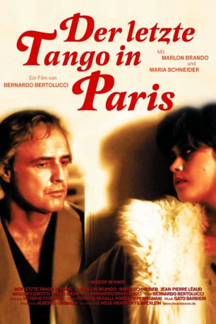
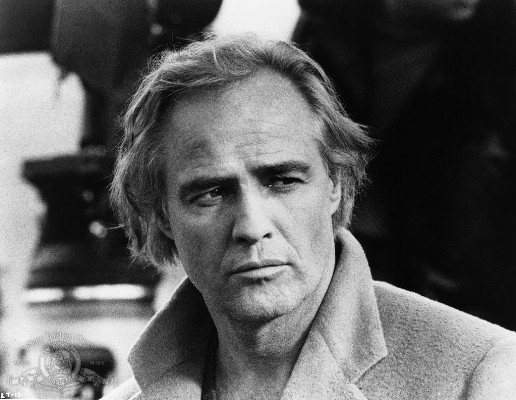
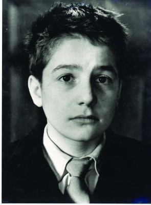
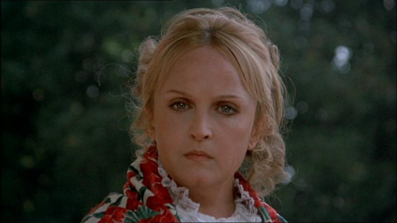
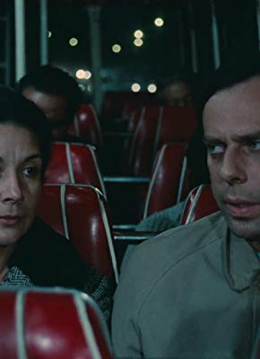

#11033 Der Letzte Tango in Paris
Alternativ: Last Tango in Paris (Englischer Titel)
Auszeichnungen: für 2 Oscars nominiert
 
 IMDB-Wertung: 7.1 / 10
IMDB-Wertung: 7.1 / 10  Metascore: 77
Metascore: 77 
Der alternde Amerikaner Paul ist nach dem Selbstmord seiner Frau aus der Bahn geworfen. In Paris begegnet er der jungen Jeanne. Die beiden beginnen eine leidenschaftliche, auf das rein Sexuelle beschränkte Beziehung.
Jahr: 1972
Dauer: 129 Minuten
FSK: 16
Land: Frankreich Studio: MGM Home EntertainmentTonspuren:
Untertitel:
Auflösung: 1080p (1920x1040) Größe: 9994 MB
Genre: Drama, Liebe
Regisseur:  Bernardo Bertolucci
Bernardo Bertolucci
Drehbuch: Bernardo Bertolucci, Bernardo Bertolucci, Franco Arcalli, Agnès Varda, Jean-Louis Trintignant
Soundtrack: Gato Barbieri
Darsteller:
-  Marlon Brando als Paul
- Maria Schneider als Jeanne
- Maria Michi als Rosa's Mother / La mère de Rosa
- Giovanna Galletti als Prostitute / La prostituée
- Catherine Allégret als Catherine
- Catherine Breillat als Mouchette
-  Jean-Pierre Léaud als Tom - un cinéaste, le fiancé de Jeanne
- Massimo Girotti als Marcel
- Veronica Lazar als Rosa
-  Laura Betti als Miss Blandish (scenes deleted)
-  Jean-Luc Bideau als Le capitaine de la péniche (scenes deleted)
- Gitt Magrini als Jeanne's Mother / La mère de Jeanne
- Luce Marquand als Olympia
- Marie-Hélène Breillat als Monique
- Dan Diament als TV Sound Engineer / L'ingénieur du son
- Catherine Sola als TV Script Girl / La script-girl
- Mauro Marchetti als TV Cameraman / Le cameraman
- Peter Schommer als TV Assistant Cameraman / L'assistant-opérateur
- Rachel Kesterber als Christine
- Ramón Mendizábal als Tango Orchestra Leader / Le chanteur de l'orchestre de tango
- Mimi Pinson als President of Tango Jury / Le président du concours de tango
- Darling Légitimus als La concierge
- Gérard Lepennec als Un déménageur
- Stéphan Koziak als Un déménageur
- Armand Abplanalp als Prostitute's Client / Le client de la prostituée
- Michel Delahaye als Bible Salesman / Le vendeur de bibles (scenes deleted)
- Gianni Pulone als Man on street (scenes deleted)
- Franca Sciutto als Woman on street (scenes deleted)
Datei: X:\1972\Letzte Tango in Paris, Der (1972, FSK16, 1920x1040).mkv seit 22.04.2019
Festplatte: HD 1971-1979
 Es gibt insgesamt 26 Filme in der Gruppe '1972'
Es gibt insgesamt 26 Filme in der Gruppe '1972'